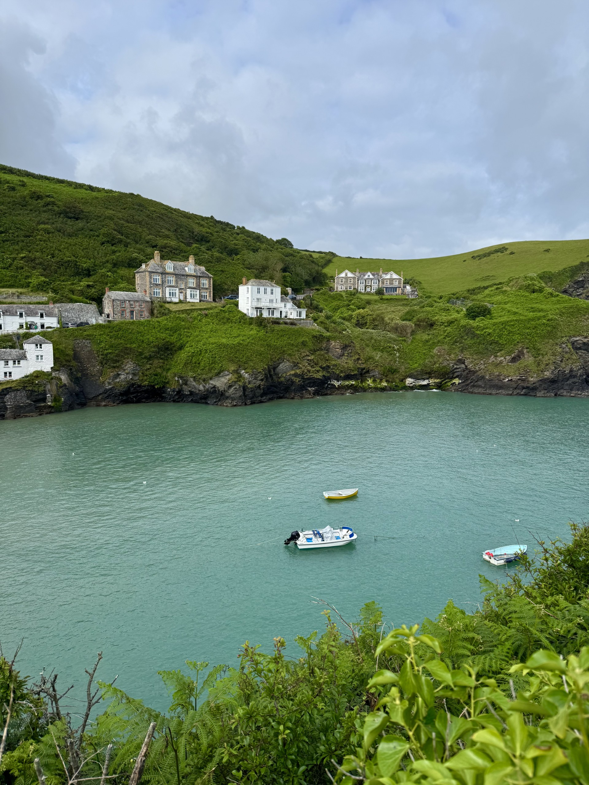

Welcome to my Home page!
Here are some links:
This link will take you to my about page.
This link will take you to my gallery page.
My favorite artist is Harry Styles!
What is this website?
It was created as an assignemnt for my Digit 100 class where I can showcase skills such as:
- Adding images to a website
- Changing Background colors of a website
- Changing fonts of a website
- Adding links to a website (internal and external)

This is a picture I took while vacationing during summer of 2026 in Port Issac, a small fishing town in the countryside of England!